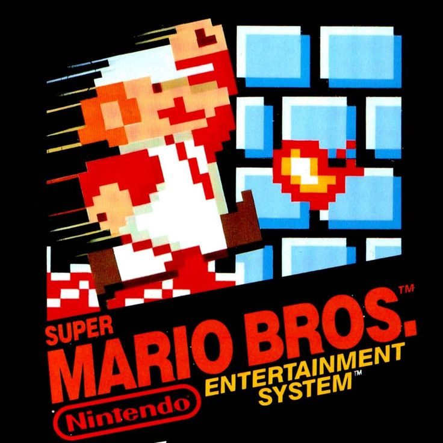
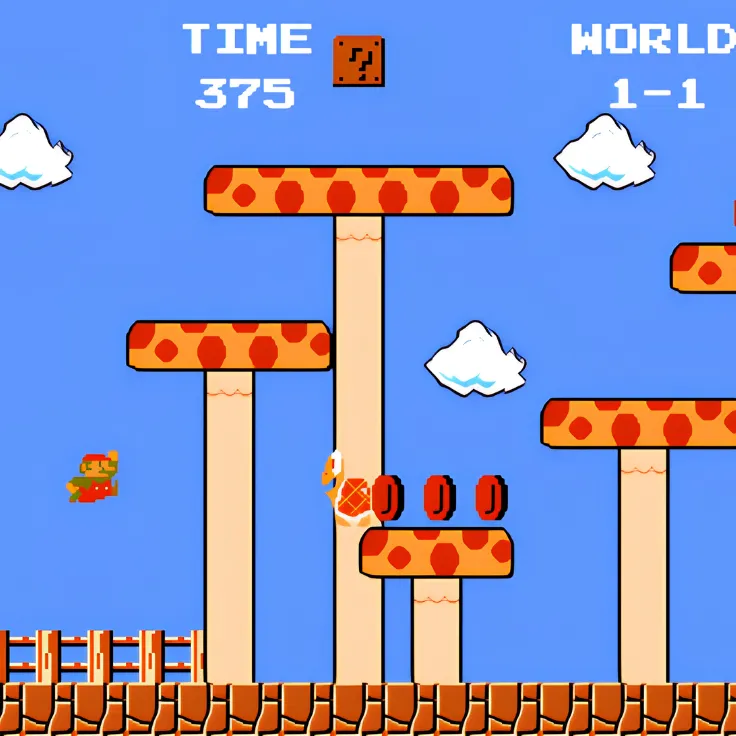
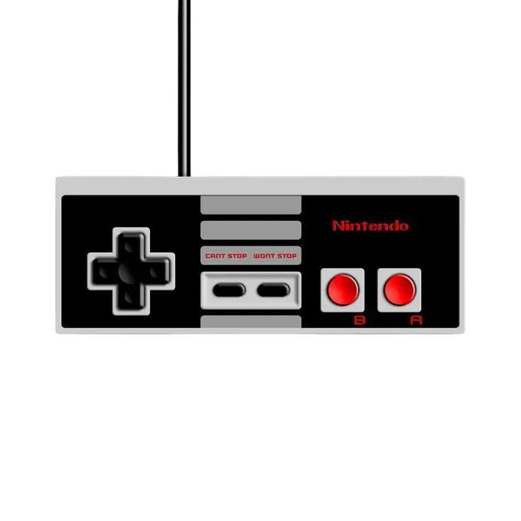

SUPER MARIO BROS.
El clásico juego de plataformas de Nintendo que revolucionó la industria de los videojuegos. Únete a Mario en su aventura para rescatar a la Princesa Peach del malvado Bowser a través de los reinos del Reino Champiñón.

NIVELES PERSONALIZADOS
Este proyecto incluye niveles completamente diseñados por nuestro equipo, con nuevos desafíos, distribuciones únicas y obstáculos que harán poner a prueba tus habilidades en la aventura más emocionante.

¡JUEGA AHORA!
Experimenta Super Mario Bros. directamente desde tu navegador. Sin descargas ni instalaciones. Elige entre los niveles originales y los niveles personalizados creados especialmente para este proyecto.